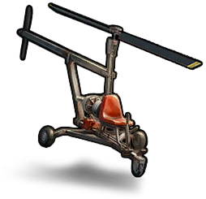

Otros
Objetos · OtrosHelicoptero
Copter

Copter / OtrosReceta de fabricación
Receta de fabricaciónCada fabricación produce 1 unidades. Los materiales siguientes corresponden a una fabricación.
 Fragmento de metalMetal Fragment
×200→
Fragmento de metalMetal Fragment
×200→
 ChatarraScrap
×50→
ChatarraScrap
×50→
 EngranajesGears
×5→
EngranajesGears
×5→
 Chapa metálicaSheet Metal
×1→
Chapa metálicaSheet Metal
×1→Cómo obtenerlo
Cómo obtenerloRecompensas / TiendaSe obtiene como recompensa o en la tienda
Productos del reciclaje
Productos del reciclajeDescripción del objeto
Sube al cielo, muévete por el mapa y raidea bases como nunca antes.